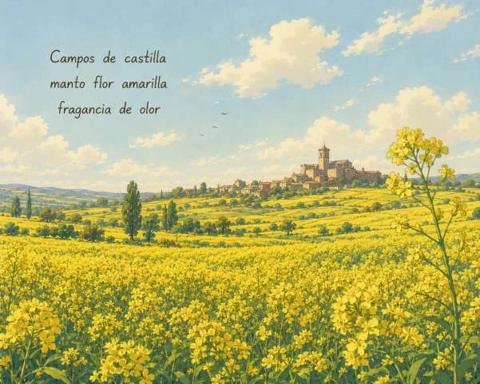
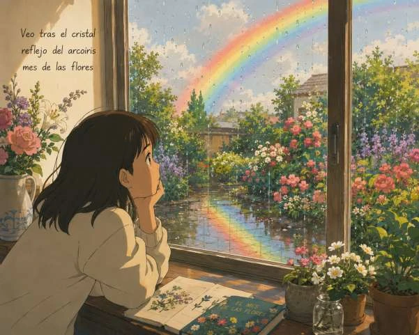

En parque Nicar balanceándose niños tarde de mayo
 Ampliar ilustración ＋
Ampliar ilustración ＋Descripción de la ilustración
Tres niños juegan en un parque: dos ocupan los columpios y el tercero corre con los brazos extendidos hacia ellos. Las ramas enmarcan la escena, iluminada por un cielo amarillo y rosado. Al fondo hay un banco; en primer plano aparecen hierba y flores, y a la izquierda un breve texto.
Campos de castilla manto flor amarilla fragancia de olor


Ampliar ilustración ＋Descripción de la ilustración
Las flores amarillas ocupan casi toda la mitad inferior de la imagen y se prolongan por las lomas. Entre parcelas verdes y árboles se distingue un pueblo, con una torre destacada en el horizonte. El cielo azul tiene nubes blancas. Un breve poema está colocado en la zona superior izquierda.
Veo tras el cristal reflejo del arcoiris mes de las flores


Ampliar ilustración ＋Descripción de la ilustración
Apoyada junto a una ventana, una joven observa un jardín lleno de flores. En el cristal quedan gotas y, en el exterior, un arcoíris cruza el cielo y se refleja en el suelo mojado. Sobre la mesa hay un libro abierto y varios recipientes con flores. Un breve texto ocupa la esquina superior izquierda.